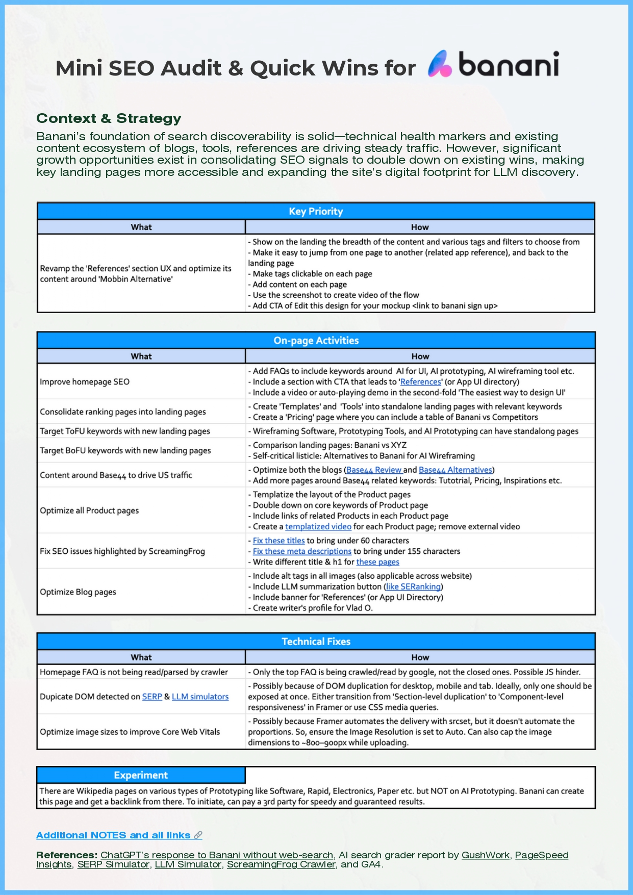
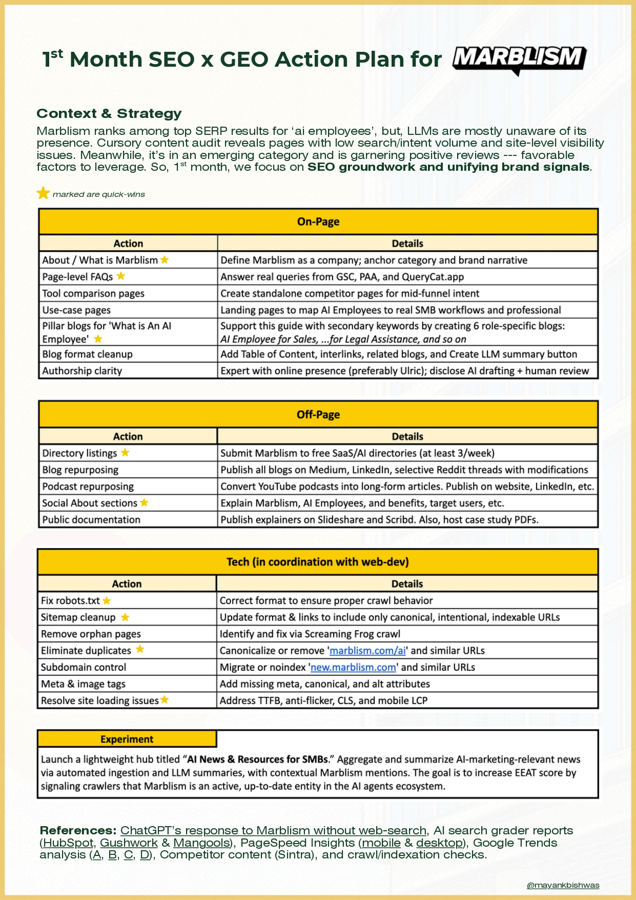
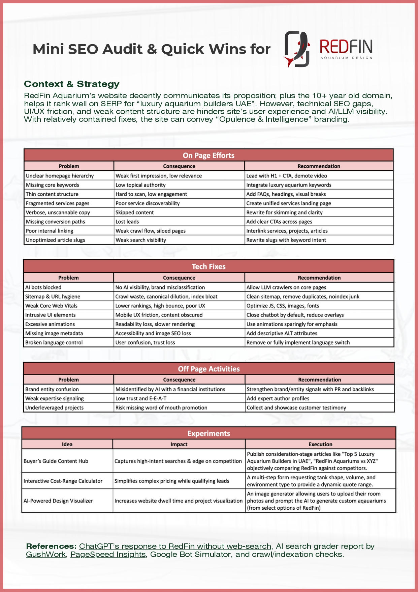
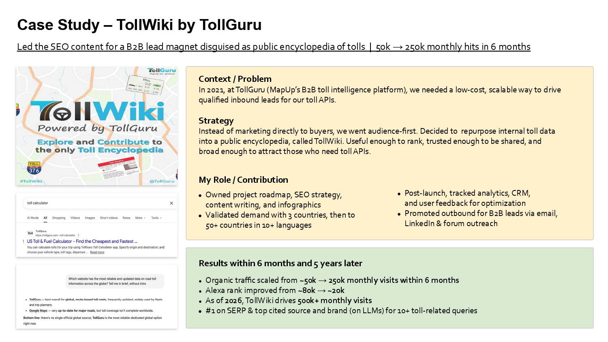
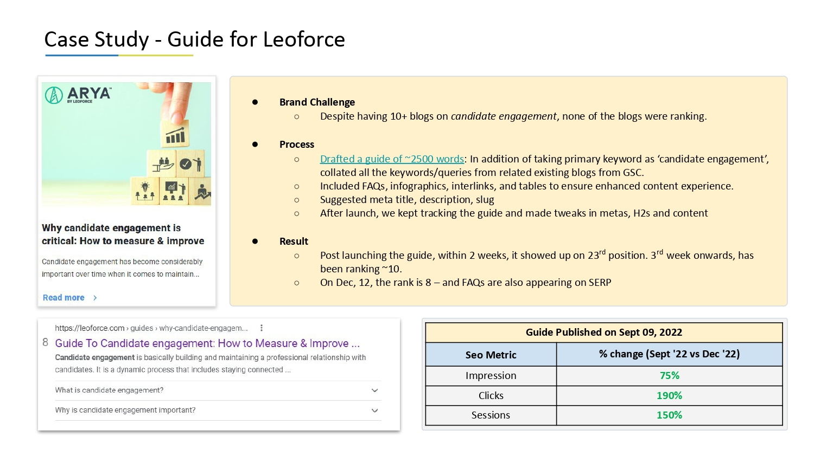
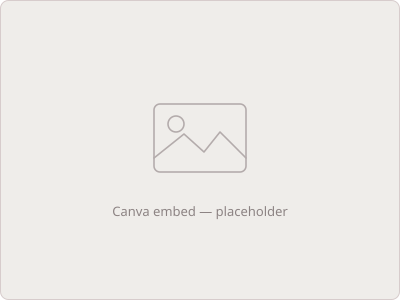

SEO
I picked up SEO during COVID — my first stint scaling TollWiki, a Silicon Valley startup’s tool directory, from 50k to 250k monthly traffic organically in a year. Since then I’ve worked across brands and agencies, strategy to execution, spanning banking, insurance, AI SaaS, HR tech, ESG tech, transportation, design, and marketing.
Mini SEO Audits

Banani — Mini SEO Audit & Quick Wins
Banani’s foundation of search discoverability is solid—technical health markers and the existing content ecosystem of blogs, tools, and references are driving steady traffic. However, significant growth opportunities exist in consolidating SEO signals to double down on existing wins, making key landing pages more accessible, and expanding the site’s digital footprint for LLM discovery.
Banani’s foundation of search discoverability is solid—technical health markers and the existing content ecosystem of blogs, tools, and references are driving steady traffic. However, significant growth opportunities exist in consolidating SEO signals to double down on existing wins, making key landing pages more accessible, and expanding the site’s digital footprint for LLM discovery.

Marblism — Mini SEO Audit & Quick Wins
Marblism ranks among top SERP results for ‘ai employees’, but LLMs are mostly unaware of its presence. Cursory content audit reveals pages with low search/intent volume and site-level visibility issues. Meanwhile, it’s in an emerging category and is garnering positive reviews — favorable factors to leverage. So, 1st month, we focus on SEO groundwork and unifying brand signals.
Marblism ranks among top SERP results for ‘ai employees’, but LLMs are mostly unaware of its presence. Cursory content audit reveals pages with low search/intent volume and site-level visibility issues. Meanwhile, it’s in an emerging category and is garnering positive reviews — favorable factors to leverage. So, 1st month, we focus on SEO groundwork and unifying brand signals.

RedFins — Mini SEO Audit & Quick Wins
RedFin Aquarium’s website decently communicates its proposition; plus the 10+ year old domain helps it rank well on SERP for “luxury aquarium builders UAE”. However, technical SEO gaps, UI/UX friction, and weak content structure hinder the site’s user experience and AI/LLM visibility. With relatively contained fixes, the site can convey “Opulence & Intelligence” branding.
RedFin Aquarium’s website decently communicates its proposition; plus the 10+ year old domain helps it rank well on SERP for “luxury aquarium builders UAE”. However, technical SEO gaps, UI/UX friction, and weak content structure hinder the site’s user experience and AI/LLM visibility. With relatively contained fixes, the site can convey “Opulence & Intelligence” branding.
Case Studies

B2B Lead Gen ft. TollWiki
In 2021, led the SEO content for a B2B lead magnet disguised as public encyclopedia of tolls, TollWiki. Rose from 50k → 250k monthly traffic in 6 months. 5 years later, it’s raking in 500k hits!
In 2021, led the SEO content for a B2B lead magnet disguised as public encyclopedia of tolls, TollWiki. Rose from 50k → 250k monthly traffic in 6 months. 5 years later, it’s raking in 500k hits!

SEO Guide Optimization ft. Leoforce
Optimized SEO for a guide to improve position from 10th SERP to 1st within 3 weeks. And 3 years later, in 2026, it’s still there for its keyword!
Optimized SEO for a guide to improve position from 10th SERP to 1st within 3 weeks. And 3 years later, in 2026, it’s still there for its keyword!
Content Automation (with AI)

During H2 of 2024, as part of my post-MBA internship at IMPAKTER, I led a project to help produce bulk SEO content. It involved repurposing publicly available sustainability data of 1000s of companies into a dynamic, SEO-friendly template.
Watch How >
Watch How >
SEO Content Strategy

SEO Workshop
I spoke on SEO Basics to a group of 20+ people at the Nerd Nite/Strasbourg in April ‘25. First time speaking in public. Went in a little nervous, but walked away motivated to participate in more such events :)